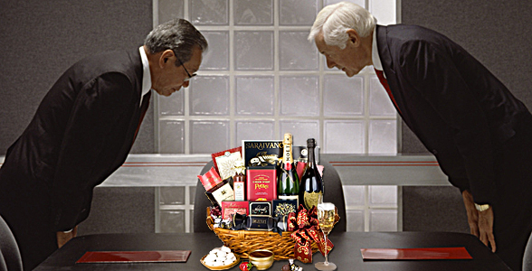

WORKPLACE
In Japan the business workweek is not unlike the United States beginning on Monday and
ending on Friday with workers working 40 hours per week (Workweek and weekend, 2012, "Japan").
The Japanese are also aware of the learnability difficulties of Japanese nuances posed to foreigners
who work in Japan and will not expect them to speak or read the language
(Kwintessential, n.d, "Understanding of Foreign Ways"). The corporate culture of Japan holds punctuality
in high esteem and just like in Japanese personal relationships the business relationships are based on hierarchy.
The Japanese use the title printed on a person's business card to determine a negotiating counterpart. So consideration
should be taken to ensure one's rank is printed on the business card. Additionally, in Japanese business all work is
done as a group and results in everyone failing or succeeding. Because of this group environment resolutions in the Japanese
workplace are done by consensus and as such everyone's input is required before a final decision is made
(eDiplomat, n.d, "Corporate Culture"). The business attire in Japan is a conservative one, so both men and woman should dress
conservatively. Men should also take care to wear dark colored business suits (Kwintessential, n.d, "Dress Etiquette") and women
should wear subtle colors (eDiplomat, n.d, "Dress").

When a party is conducting a first business meeting it is customary to give
a gift as a sign of respect to the highest-ranking person at the end of the meeting (Kwintessential, n.d, "Business Meeting Etiquette").
Furthermore, the eDiplomat website points out, "Not giving a proper gift could ruin a business relationship."
When in a business negotiation the Japanese require written contracts with broad agreements so that disagreements can be handled flexibly.
Note that the Japanese do not believe contracts to be set in stone so that those contracts may be renegotiated. It's also important to
understand that the Japanese do not want confrontation so one should never lose their temper or raise their voice. When dealing with
foreigners in legal maters, the Japanese will considered the use of a Japanese lawyer a friendly gesture by that party
(Kwintessential, n.d, "Business Negotiation"). Lastly, "[The Japanese] expect both parties to come to the table with their best offer."
Reports the Kwintessential website.
{kind=link}